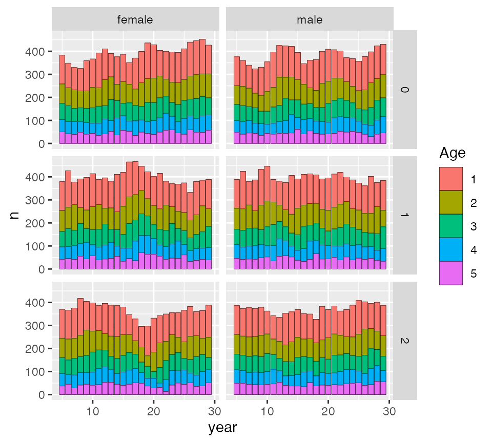

simple-example-with-migration.RmdIn this vignette we show how to use CKMRpop/spip in a multi-population version with asymmetrical migration rates. It would be good to read the “about_spip” vignette beforehand to understand how migration is implemented in spip.
Our goal here is to model three “populations” of a fish species in which migration occurs during the larval stage, and it is influenced by currents that flow down the coast and make migration occur primarily in one direction. Each of the populations will have the same life tables, etc. We will make it simple.
First load some packages:
The basic demography for each, is given below. We assume no mortality from newborn to age one. In effect we are only modeling the the newborns that survive to age 1. Only 3, 4, and 5 year-olds mate, and older fish have somewhat more reproductive success.
pars <- list()
pars$`max-age` <- 5
pars$`fem-surv-probs` <- c(1, 0.7, 0.8, 0.8, 0.8)
pars$`male-surv-probs` <- c(1, 0.7, 0.8, 0.8, 0.8)
pars$`fem-prob-repro` <- c(0, 0, 1, 1, 1)
pars$`male-prob-repro` <- c(0, 0, 1, 1, 1)
pars$`fem-asrf` <- c(0, 0, .5, .7, 1)
pars$`male-asrp` <- c(0, 0, .5, .7, 1)
pars$`fem-rep-disp-par` <- 0.25
pars$`male-rep-disp-par` <- 0.25
pars$`sex-ratio` <- 0.5We will run these simulations for 25 years and just assume an annual cohort size of 200 fish in each population, and we will go for a constant population size and start off with the stable age distribution.
pars$`number-of-years` <- 25
# given cohort sizes of 250 the stable age distribution
# can be found and used for the initial number of indivs
L <- leslie_from_spip(pars, 250)
# then we add those to the spip parameters
pars$`initial-males` <- floor(L$stable_age_distro_fem)
pars$`initial-females` <- floor(L$stable_age_distro_male)
pars$`cohort-size` <- "const 250"We will simulate a sampling program in which juveniles are sampled when they recruit after their larval phase. We assume that the larval phase starts at birth, but is over by age 1. So we can sample new recruits via prekill sampling at age 1. We will pretend the sampling is non-lethal. We will also non-lethally sample a fraction of the older age-class fish.
pars$`discard-all` <- 0
pars$`gtyp-ppn-fem-pre` <- "10-25 0.05 0.00 0.00 0.00 0.00"
pars$`gtyp-ppn-male-pre` <- "10-25 0.05 0.00 0.00 0.00 0.00"
pars$`gtyp-ppn-fem-post` <- "10-25 0.00 0.01 0.01 0.01 0.01"
pars$`gtyp-ppn-male-post` <- "10-25 0.00 0.01 0.01 0.01 0.01"OK! At this point, we have set up the demography for a single population. Let’s just show that we could simulate a single population with that demography and the sampling like this:
But, of course, the question is, how do we simulate multiple, interacting populations?
To simulate multiple populations in spip, from within CKMRpop, we set the num_pops option of run_spip() to the number of populations. And then, for the pars option we pass a list of num_pops different lists, each one holding the demography and sampling information for each of the populations in the simulation. In our case, since we are simulating three populations with the same demography, num_pops = 3 and we can construct our pars argument like this:
pars_list <- list(
pars,
pars,
pars
)because each population has the same demography.
Note that we have not included any migration between the the populations yet, but we can still run a simulation with all of them like this:
set.seed(15)
three_pop_dir <- run_spip(
pars = pars_list,
num_pops = 3
)
slurp3 <- slurp_spip(three_pop_dir, num_generations = 2)And you can investigate that output by making the plots and other summaries shown in the main vignette. Many of these summaries account for the multiple populations like this:
ggplot_census_by_year_age_sex(slurp3$census_postkill)
Those are the postkill census sizes in the three different populations, which get the labels 0, 1, and 2, according to the order in which they were passed to spip (i.e., their order in the pars_list, above.)
The above simulated multiple populations, but did not simulate any migration between them.
Here, we will imagine different rates of self-recruitment of the larvae, which means different rates at which surviving larvae are going to be migrants. The populations are labeled 0, 1, and 2, and, as stated above, we will simulate somewhat unidirectional migration between them, like so:
The way we implement this is by adding options to each population’s demography parameters like so:
# out-migration rates pops 0, 1, 2
pars_list[[1]]$`fem-prob-mig-out` <- "5-25 1 .20"
pars_list[[1]]$`male-prob-mig-out` <- "5-25 1 .20"
pars_list[[2]]$`fem-prob-mig-out` <- "5-25 1 .15"
pars_list[[2]]$`male-prob-mig-out` <- "5-25 1 .15"
pars_list[[3]]$`fem-prob-mig-out` <- "5-25 1 .05"
pars_list[[3]]$`male-prob-mig-out` <- "5-25 1 .05"
# in-migration rates
pars_list[[1]]$`fem-prob-mig-in` <- "5-25 1 0.00 0.80 0.20"
pars_list[[1]]$`male-prob-mig-in` <- "5-25 1 0.00 0.80 0.20"
pars_list[[2]]$`fem-prob-mig-in` <- "5-25 1 0.05 0.00 0.95"
pars_list[[2]]$`male-prob-mig-in` <- "5-25 1 0.05 0.00 0.95"
pars_list[[3]]$`fem-prob-mig-in` <- "5-25 1 0.10 0.90 0.00"
pars_list[[3]]$`male-prob-mig-in` <- "5-25 1 0.10 0.90 0.00"Now, we can simulate this:
set.seed(15)
mig_dir <- run_spip(
pars = pars_list,
num_pops = 3
)
slurp_mig <- slurp_spip(mig_dir, num_generations = 1)Now, the object slurp_mig holds information about census sizes of the populations and the relationships between samples, etc. That can be broken down by populations.
First, a record of every migration event is stored in slurp_mig$migrants. This can be easily summarized:
slurp_mig$migrants %>%
count(age, from_pop, to_pop)
#> # A tibble: 6 x 4
#> age from_pop to_pop n
#> <int> <int> <int> <int>
#> 1 1 0 1 876
#> 2 1 0 2 227
#> 3 1 1 0 41
#> 4 1 1 2 793
#> 5 1 2 0 35
#> 6 1 2 1 250For a further example, to tabulate parent-offspring pairs found between different populations, we can compile the relationships and summarize:
# compile relationships
crel <- compile_related_pairs(slurp_mig$samples)
# count number of PO pairs by which populations
# the members were born in
crel %>%
filter(dom_relat == "PO") %>%
mutate(
parent_born_pop = case_when(
upper_member == 1 ~ born_pop_1,
upper_member == 2 ~ born_pop_2,
TRUE ~ NA_integer_
),
child_born_pop = case_when(
upper_member == 1 ~ born_pop_2,
upper_member == 2 ~ born_pop_1,
TRUE ~ NA_integer_
)
) %>%
count(parent_born_pop, child_born_pop)
#> # A tibble: 6 x 3
#> parent_born_pop child_born_pop n
#> <int> <int> <int>
#> 1 0 0 45
#> 2 0 1 3
#> 3 1 1 31
#> 4 1 2 3
#> 5 2 1 1
#> 6 2 2 37